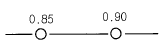
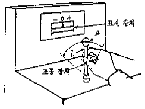
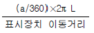
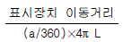
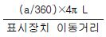
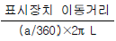
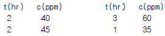

산업안전산업기사 (2002-05-26 기출문제)
1과목: 산업안전관리론
1. 어느 사업장에서 당해년도에 330명의 재해자가 발생하였다. 무상해 사고는 몇 명인가?
- 29명
- 30명
- 300명
- 329명
(정답률: 55%)

2. 도수율 4이고 연 근로시간 12000000시간이라면 몇 건의 재해가 발생하였는가?
- 4.8
- 48
- 480
- 0.48
(정답률: 56%)
3. 다음중 재해방지 기본원칙중 해당되지 않는다고 생각되는 것은?
- 대책선정 원칙
- 손실우연 원칙
- 예방가능 원칙
- 통계의 원칙
(정답률: 81%)
4. 다음중 사고의 간접원인이 아닌 것은?
- 정신적 원인
- 관리적 원인
- 신체적 원인
- 물적원인
(정답률: 80%)
5. 산업안전보건위원회를 구성하여야 할 사업은 어느 것인가?
- 상시근로자 100인 이상을 사용하는 사업
- 건설업
- 제조업 중 1차 금속 산업
- 상시 근로자 1000인 이상을 사용하는 사업
(정답률: 34%)
6. 기계 작업중 정전되었을 때 책임자가 꼭 하여야 하는 것은?
- 전원스위치를 끈다.
- 크림등을 제거하여 작업의 능률을 향상시킨다.
- 기계주위,청소와 정돈을 한다.
- 공작물의 치수공작 진로등을 살펴본다.
(정답률: 82%)
7. 다음중 사고의 원인이 가장 높은 행동은?
- 불안전한 행동
- 불완전한 행동
- 분수넘친 행동
- 불행한 행동
(정답률: 76%)
8. 인간의 욕구를 5단계로 나누고 위계이론을 발표한 사람은 다음 중 누구인가?
- 데이브스
- 하인리히
- 맥그리거
- 매슬로우
(정답률: 72%)
9. 안전조직에서 line system 의 단점 중 옳은 것은?
- 비경제적 조직체제이다.
- 안전관리부와 생산부간의 유기적 협조가 곤란하다.
- 안전조직원은 전문가이어야 한다.
- 대규모 기업에서 채택이 곤란하다.
(정답률: 58%)
10. 다음중 피로의 종류에 속하지 않는 것은?
- 주관적 피로
- 객관적 피로
- 생리적 피로
- 정신적 피로
(정답률: 18%)
11. 다음 중 물건의 정리에 해당되지 않는 것은?
- 근접의 요인
- 동류의 요인
- 통합의 요인
- 연속의 요인
(정답률: 34%)
12. 다음 중 바이오리듬 이론에서 지성적 사고능력이 뛰어난 지성적 리듬의 주기 일수는?
- 23일
- 28일
- 30일
- 33일
(정답률: 28%)
13. 안전교육 학습지도법의 단계 중 그 순서가 옳게 나열된 것은?
- 준비— 교시— 연합— 총괄— 응용
- 준비— 연합— 교시— 응용— 총괄
- 총괄— 연합— 교시— 응용— 준비
- 응용— 준비— 연합— 총괄— 교시
(정답률: 75%)
14. 안전 교육의 방법 중 토의식 안전 교육의 특징이 아닌 것은?
- 기능적, 태도적인 것의 교육이 쉽다.
- 참가자가 자주적, 적극적으로 되기 쉽다.
- 참가자 개개인에게 동기 부여가 용이하다.
- 참가자에게 미지의 분야에 대한 지식을 일정한 시일에 습득시킬 수 있다.
(정답률: 63%)
15. 관료주의를 대표하는 것으로 틀린 것은?
- 창의성
- 안정성
- 엄격함
- 영속성
(정답률: 54%)
16. 종업원의 안전에 관한 O.J.T 교육에 있어서 가장 중요한 역할을 담당하는 사람은 누구인가?
- 사장
- 부장
- 안전관리자
- 일선감독자
(정답률: 45%)
17. 안전모를 머리에 장착한 경우 전면 또는 측면에 있는 머리공정대와 두정부와의 착용높이는 얼마가 되어야 하는가?
- 60mm 이상
- 70mm 이상
- 80mm 이상
- 90mm 이상
(정답률: 39%)
18. 다음 중 학습목적을 세분하여 구체적으로 결정한 것은?
- 학습성과
- 학습방법
- 학습목표
- 학습정도
(정답률: 15%)
19. 다음중 행동의 변화가 가장 어려운 경우는?
- 지식변화
- 집단행동변화
- 태도변화
- 개인행동변화
(정답률: 74%)
20. 안전모의 모체 재질은 모든 종류가 합성수지를 정하여 두고 있으나 한가지만 금속으로 인정을 해두고 있다. 그것은?
- A
- AB
- AE
- ABE
(정답률: 43%)
2과목: 인간공학 및 시스템안전공학
21. 다음 시스템의 신뢰도는?

- 0.765
- 0.865
- 0.875
- 0.992
(정답률: 62%)
22. 신체의 안정성을 증대시키는 조건이 아닌 것은?
- 기저(基底)를 작게한다.
- 몸의 무게 중심을 낮춘다.
- 몸의 무게 중심을 기저(基底)내에 들게한다.
- 모우멘트의 균형을 생각한다.
(정답률: 46%)
23. 4m 거리에서 조도가 60lux라면 2m에서는 조도가 얼마인가?
- 150 lux
- 240 lux
- 320 lux
- 480 lux
(정답률: 65%)
24. 인간에 대한 감시방법 중 자각에 의해서 자신의 상태를 알고 행동하는 감시방법은?
- Self-monitoring 방법
- 생리학적 monitoring 방법
- Visual monitoring 방법
- 반응에 대한 monitoring 방법
(정답률: 69%)
25. System 안전관리를 위한 System 의 위험성의 분류중 Category 에 맞지 않는것은?
- Category Ⅰ - 무시
- Category Ⅱ - 한계적
- Category Ⅲ - 경고
- Category Ⅳ - 파극적
(정답률: 47%)
26. 산업안전표지 중 보행금지는 걷는 사람을, 유독물 경고는 해골과 뼈로 나타내고 있다. 이처럼 사물이나 행동을 단순하고 정확하게 나타낸 부호는?
- 묘사적 부호
- 추상적 부호
- 사실적 부호
- 임의적 부호
(정답률: 64%)
27. 기계의 정보처리는 다음중 어느 기능을 갖는가?
- 임기 응변적 기능
- 연역적 기능
- 귀납적 기능
- 응용능력적 기능
(정답률: 38%)
28. 어느 부품 15,000개를 1만시간 가동중에 15개의 불량품이 발생하였다. 평균 고장시간(MTBF)은?
- 1 × 106 시간
- 2 × 106 시간
- 1 × 107 시간
- 2 × 107 시간
(정답률: 47%)
29. 다음 중 인간 공학의 목적이라고 할 수 없는 것은?
- 안전성 향상과 사고방지
- 작업의 능률성과 생산성 향상
- 환경의 쾌적성
- 인간의 신뢰성 회복
(정답률: 52%)
30. 사고의 외적 요인으로서의 4M에 해당되지 않는 것은?
- Man
- Machine
- Material
- Media
(정답률: 61%)
31. 인간에러 방지를 위한 대책과 활동 내용을 서로 연결하고 있다. 잘못 연결된 항은?
- 기술교육 - Morale 교육
- 착각방지 - 안전표지의 정비
- 미스예지.예측활동 - 위험예지 훈련
- 단결력, 경쟁심에 의한 안전의식 고취 - 소집단 활동
(정답률: 42%)
32. 귀마개에 관한 설명중 올바른 것은?
- 귀마개는 주변의 모든 음을 완벽히 차단하여야 한다.
- 소음이 심할 경우 통화이해도를 증가시켜준다.
- 음성수준이 85dB이하인 경우에 통화이해도를 증가시켜 준다.
- 귀마개와 통화이해도와는 관계가 없다.
(정답률: 34%)
33. 인간-기계 통합 체제로 틀린 것은?
- 자동체계
- 제어체계
- 기계화체계
- 수동체계
(정답률: 38%)
34. 시스템 신뢰도를 증가시킬 수 있는 방법이 아닌 것은?
- 페일세이프설계
- 풀프루프설계
- 중복설계
- lock system설계
(정답률: 38%)
35. 다음 통제장치의 형태 중 그 성격이 다른 것은?
- 푸시버튼
- 터글스위치
- 놉(knob)
- 로터리스위치
(정답률: 57%)
36. 기계의 통제방법에는 개폐, 양의조절, 반응에 의한 통제가 있다. 다음중 불연속 통계기기에 해당되는 것은?
- 노브
- 페달
- 크랭크
- 수동푸시버튼
(정답률: 45%)
37. 그림에 있는 조종구(ball control)와 같이 상당한 회전운동을 하는 조종장치가 선형표시장치를 움직일 때는 L을 반경(지레의 길이), a를 조정장치가 움직인 각도라 할 때 조종표시 장치의 이동비율(control display ratio)을 나타낸 것은?





(정답률: 60%)
38. 작업장 내부의 추천반사율이 가장 낮아야 하는 곳 은?
- 바닥
- 천장
- 가구
- 벽
(정답률: 71%)
39. 인간의 눈은 모든 빛을 동일하게 받아들이는 것 같아 보이지만 실제로는 그렇지 않다. 다음 중 인식범위가 가장 넓은 색상은?
- 백색
- 청색
- 적색
- 녹색
(정답률: 53%)
40. 손실과 이익의 기회가 공전하고 위험의 부담을 보험등으로 전가할 수 없는 위험은 무슨 위험인가?
- 동적위험
- 정적위험
- 감축위험
- 순수위험
(정답률: 26%)
3과목: 기계위험방지기술
41. 셰이퍼(Shaper)에서 바이트를 어떻게 물리는 것이 가장 안전한 작업을 할 수 있는가?
- 바이트를 길게 나오도록 한다
- 가능한 범위내에서 짧게 고정하고, 날끝은 샹크의 뒷면과 일직선상에 있게 한다.
- 짧게 고정하고 날끝은 샹크의 뒷면보다 앞에 있도록 한다
- 측면을 절삭할 때는 수직으로 바이트를 고정해야한다
(정답률: 47%)
42. 로울러기의 방호장치가 아 닌 것은?
- 손조작식
- 복부조작식
- 무릎조작식
- 수인식
(정답률: 71%)
43. 마찰은 어떤 함수(function)인가?
- 접촉력, 표면과 물체의 상태
- 중량, 표면 및 접촉
- 운동력, 표면상태, 물체의 강도
- 표면적과 하중
(정답률: 47%)
44. 연삭기에서 숫돌의 바깥지름이 180㎜라면, 플랜지의 바깥지름은 몇 ㎜ 이상이어야 하는가?
- 60㎜
- 50㎜
- 40㎜
- 30㎜
(정답률: 68%)
45. 크레인의 안전장치가 아닌 것은?
- 과부하방지장치
- 조속기
- 권과방지장치
- 비상정지장치
(정답률: 65%)
46. 기계의 운전상태에서 점검할 사항이 아닌 것은?
- 기어의 물림상태
- 급유확인
- 베어링부의 온도상승
- 소음, 진동유무
(정답률: 53%)
47. 밀링커터를 교환할 때 주의사항 중 옳은 것은?
- 밑에 걸레를 깔고 바꾼다.
- 밑에 목재를 받쳐 놓고 한다.
- 밑에 얇은 철판을 깔고 바이스에 물린다.
- 밑에 두꺼운 종이를 깔고 바이스에 깊게 물린다.
(정답률: 43%)
48. 밀링작업의 안전사항으로서 잘못된 것은?
- 측정시에는 반드시 기계를 정지시킨다.
- 절삭중의 칩 제거는 칩브레이크로 한다.
- 일감을 풀어내거나 고정할 때에는 기계를 정지시킨다
- 상,하,좌,우의 이송장치의 핸들은 사용후 풀어놓는다
(정답률: 60%)
49. 보일러의 안전한 가동을 위하여 압력방출장치를 2개 설치한 경우에 올바른 작동 방법은?(관련 규정 개정전 문제로 여기서는 기존 정답인 3번을 누르면 정답 처리됩니다. 자세한 내용은 해설을 참고하세요.)
- 최고 사용압력 이상에서 2개 동시작동
- 최고 사용압력 이하에서 2개 동시작동
- 최고 사용압력 이하에서 1개가 작동되고 다른 것은 최고 사용압력 1.03배이하에서 작동
- 최고 사용압력 이하에서 1개가 작동되고 다른 것은 최고 사용압력 1.06배이하에서 작동
(정답률: 65%)
50. 회전시험을 할 때, 미리 비파괴검사를 실시해야하는 고속 회전체는?
- 회전축의 중량이 1톤을 초과하고, 원주속도가 25m/s 이상인 것
- 회전축의 중량이 5톤을 초과하고, 원주속도가 25m/s 이상인 것
- 회전축의 중량이 1톤을 초과하고, 원주속도가 120m/s 이상인 것
- 회전축의 중량이 5톤을 초과하고, 원주속도가 120m/s 이상인 것
(정답률: 56%)
51. 단조작업에서 업셋팅(up-setting)이란?
- 단면을 크게 하고 길이를 짧게 한다.
- 구멍을 뚫거나 넓히든지 한다.
- 단면을 작게 하고 길이를 길게 한다.
- 얇게 늘인다.
(정답률: 43%)
52. 로울러기의 방호장치인 급정지장치중 복부조작식은 다음 어느 위치에 있어야 하는가?
- 밑면에서 1.8(m)이상
- 밑면에서 0.8(m)이상 1.1(m)이내
- 밑면에서 1.8(m)이내
- 밑면에서 0.8(m)이상 1.5(m)이내
(정답률: 47%)
53. 다음 확동식 클러치 프레스에 부착된 양수기동식 방호장치에 있어서 클러치 맞물림개수가 4군데, 300SPM(StrokePer minute)일때 양수기동식 조작부 설치 거리는 어느 것인가?
- 360mm
- 260mm
- 240mm
- 340mm
(정답률: 41%)
54. 다음 중 기계의 안전조건이 아닌 것은?
- 기계 조작방법의 안전화
- 작업점의 안전화
- 구성 부분의 강도적 안전화
- 기계의 외관적 안전화
(정답률: 18%)
55. 다음 중 벨트 컨베이어의 특징에 해당되지 않는 것은?
- 무인화 작업이 가능하다.
- 연속적으로 물건을 운반할 수 있다.
- 운반과 동시에 하역작업이 가능하다.
- 경사각이 큰 경우에도 쉽게 물건을 운반할 수 있다.
(정답률: 61%)
56. 유압리프트(lift)의 방호장치로 다음 중 가장 적당한 것은?
- 역화방지장치
- 권과방지장치
- 반발방지장치
- 압력방출장치
(정답률: 43%)
57. 가스집합장치의 위험방지를 위하여 사업주는 화기를 사용하는 설비로부터 몇 m이상 떨어진 장소에 장치를 설치하여야 하는가?
- 20
- 10
- 7
- 5
(정답률: 36%)
58. 기계 운전시의 점검사항으로 틀 린 것은?
- 클러치
- 이상음,진동상태
- 베어링 온도 상승 여부
- 전동기 개폐기의 이상 유무
(정답률: 36%)
59. 해머작업시 안전규칙에 위배되는 사항은?
- 장갑을 끼고 작업금지
- 작업중에 해머상태확인
- 공동작업시 호흡을 맞춘다
- 열처리된 것은 강하게 때린다
(정답률: 50%)
60. 세이퍼(shaper) 안전장치로 적당하지 않는 것은?
- 프레임
- 방책
- 칩받이
- 칸막이
(정답률: 31%)
4과목: 전기 및 화학설비위험방지기술
61. 가동철심형 변압기를 내장한 교류아크용접기에서 무엇을 조절해서 전류의 크기를 조절할 수 있는가?
- 누설자속
- 누설전압
- 누설저항
- 누설커패시턴스
(정답률: 23%)
62. 소방법에서는 유별을 달리하는 위험물은 동일 장소에서 저장, 취급해서는 안된다고 규정하고 있다. 다음중 혼재(혼합)사용 가능한 물질은 어느 것인가?(오류 신고가 접수된 문제입니다. 반드시 정답과 해설을 확인하시기 바랍니다.)
- 고체산화성물질 - 액체산화성물질
- 고체환원성물질 - 가연성물질
- 폭발성물질 - 금수성물질
- 가연성물질 - 고체산화성물질
(정답률: 28%)
63. 교류아크 용접기의 재해방지를 위해 쓰이는 것은?
- 자동전격방지 장치
- 정전압 장치
- 정전류 장치
- 리미트 스위치
(정답률: 61%)
64. 상용압력이 200kg/cm2인 고압가스설비의 안전 밸브 작동압력(kg/cm2)은?
- 234
- 240
- 246
- 253
(정답률: 53%)
65. 직격뢰에 대한 방호 설비로서 가장 적당한 것은?
- 매설 지선
- 정전 방전기
- 가공 지선
- 서지 흡수기
(정답률: 23%)
66. 분말 소화약제에 대한 설명 중 맞지 않는 것은?
- B.C급 화재의 소화에 적당하다.
- 압축된 방사원으로는 질소가스를 사용한다.
- 소화효과는 희석효과이다.
- 축압식과 가스가압식이 있다.
(정답률: 48%)
67. 사용전압에 따른 절연저항치가 틀린 것은?
- 대지전압이 150[V]이하 - 0.1[MΩ] 이상
- 150[V]초과 400[V]이하 - 0.2[MΩ] 이상
- 300[V]초과 400[V]이하 - 0.3[MΩ] 이상
- 400[V]를 넘는 것 - 0.4[MΩ]이상
(정답률: 49%)
68. 다음중 폭발압력에 대한 환경의 영향중 잘못된 것은?
- 온도가 고온일수록 최대 폭발압력은 증가한다.
- 온도가 고온일수록 최대 폭발압력 상승속도는 증가한다.
- 최대 폭발압력은 초기압력에 정비례 한다.
- 최대 폭발압력 상승속도는 초기압력에 정비례한다.
(정답률: 17%)
69. 위험물 제조소의 건축물 기준에 관한 설명이다. 잘못 기술된 것은?
- 액체의 위험물을 취급하는 건축물의 바닥은 위험물이 침유하지 못하는 재료를 사용하고 그 바닥은 평평하게 한다.
- 연소의 우려가 있는 외벽은 내화구조로 한다.
- 지붕은 가벼운 금속판 또는 불연재료로 덮는다.
- 지하층이 없도록 하여야 한다.
(정답률: 21%)
70. 전기기기를 금속 등으로 접지하였을 경우 접지저항치(R)는 어느 수준을 유지해야 하는가? (복원 오류로 보기 내용이 정확하지 않습니다. 내용을 아시는분께서는 오류 신고를 통하여 내용 작성부탁 드립니다. 정답은 2번입니다.)
- R복원중 (1선지락전류의 암페어수/150)[Ω]
- R복원중 (150/1선지락전류의 암페어수)[Ω]
- R복원중 (1선지락전류의 암페어수/150)[Ω]
- R복원중 (150/1선지락전류의 암페어수)[Ω]
(정답률: 60%)
71. 정전용량 C=10μ F인 물체에 정전전압 V=1000v로 충전하였을 때 물체가 가지는 정전에너지는 몇 Joule인가?
- 2
- 3
- 4
- 5
(정답률: 49%)
72. 화학설비 또는 그 배관은 인화점이 몇 ℃이상인 물질에 접촉시 부식방지를 위하여 적절한 조치를 취해야 하는가?
- 35℃
- 45℃
- 55℃
- 65℃
(정답률: 19%)
73. 방호용구에 해당되지 않는 것은?
- 점퍼호스
- 고무블랭킷
- 완금커버
- 안전대
(정답률: 39%)
74. 방폭지역 분류중 1종 위험 장소에 대한 방폭 구조 종류가 아닌 것은?
- 본질 안전 방폭 구조
- 내압 방폭 구조
- 압력 방폭 구조
- 특수 방폭 구조
(정답률: 53%)
75. 방폭구조 중 가장 취약점인 부분은?
- 단자함
- 방폭구조체
- 도선의 인입부
- 접지 단자함
(정답률: 57%)
76. 배관을 설계할때 화재 폭발위험을 방지하기 위하여 고려하여야 할 사항이 아닌 것은?
- 안전밸브 및 안전판의 설치
- 유체의 종류에 따른 색채분류
- 배관계의 기밀 압력시험
- 배관의 길이
(정답률: 39%)
77. 다음 제어동작 중 설정치에서 검출치가 벗어나는 속도에 비례하여 조작신호를 송출하는 동작은?
- 위치동작
- 비례동작
- 미분동작
- 적분동작
(정답률: 21%)
78. 전기설비의 점화원 중 잠재적인 점화원은?
- 전동기 권선
- 이동형 전열기
- 전자 접촉기의 접점
- 직류 전동기의 정류자편
(정답률: 30%)
79. 작업장내 A물질의 샘플링 시간간격(t)에 대한 농도(c)는 다음과 같다. TWA(시간가중평균농도)는?

- 22.50
- 45.00
- 48.13
- 52.13
(정답률: 32%)
80. 다음중 가장 옳은 것은?
- 폭발의 성립조건은 점화원, 밀폐된공간, 폭발범위 내의 농도 등이 일반적이다.
- 분해성 물질은 폭발하지 않는다.
- 폭발은 항상 고체나 액체 상태에서 기체상태로의 물리적 변화이다.
- 외부에너지를 받아야만 폭발이 가능하다.
(정답률: 54%)
5과목: 건설안전기술
81. 철골구조에서 플렌지에 커버 플레이트를 대는 이유는?
- 전단력을 보강하기 위해
- 부재의 토션을 방지하기 위해
- 부재의 좌굴을 방지하기 위해
- 휨 모멘트의 부족을 보충하기 위해
(정답률: 29%)
82. 건설공사 안전관리비로 사용할 수 없는 사항은?
- 신호수용 반사 조끼 구입비
- 작업복, 면장갑 구입비
- 안전보건 관리자 인건비
- 각종 안전표지 구입비
(정답률: 29%)
83. 다음 중 거푸집 해체순서를 옳게 나타낸 것은?
- 작은보-바닥판-큰보
- 큰보- 작은보-바닥판
- 바닥판-큰보-작은보
- 바닥판-작은보-큰보
(정답률: 41%)
84. 콘크리트 배합시 품질에 직접 영향을 주지 않는 요소는?
- 철근의 품질
- 골재의 입도
- 물-시멘트비
- 시멘트 강도
(정답률: 46%)
85. 크레인을 사용하는 작업에서 재해방지를 위한 조치사항과 거리가 먼 것은?
- 사업주는 매월 1회이상 자체검사를 하여야 한다.
- 정격하중을 초과하여 하중을 작용시켰을 때에는 그 기록을 3년간 보존하여야 한다.
- 크레인의 달기구에 탑승설비를 한 경우에는 근로자를 탑승시킬 수 있다.
- 지브크레인인 경우에는 명세서에 기록된 경사각을 초과하여서는 안된다.
(정답률: 24%)
86. 다음의 토공기계 중 지반면보다 높은 곳의 흙파기에 가장 적당한 것은?
- 그레이더
- 파워쇼벨
- 드레그쇼벨
- 크램셸
(정답률: 59%)
87. 해체작업중의 추락과 관계가 먼 것은?
- 강풍하에서 작업을 했다.
- 해체작업 순서가 잘못 되었다.
- 구명줄, 안전모, 안전대를 사용하지 않았다.
- 지반이 나빴다.
(정답률: 42%)
88. 높이 5m 미만의 것을 제외한 틀비계의 벽고정 조립간격으로 옳은 것은?
- 수직 5m, 수평 5m
- 수직 5.5m, 수평 7.5m
- 수직 6m, 수평 7m
- 수직 6m, 수평 8m
(정답률: 30%)
89. 다음 건설장비 중 그 선회각이 270° 인 것은?
- 정치식 타워크레인
- 가이데릭
- 삼각데릭
- 진폴데릭
(정답률: 53%)
90. 고층건물공사의 마무리작업 및 외부청소작업 등에 주로 이용되는 달비계의 안전지침 중 틀린 것은?
- 와이어로우프 지름의 감소가 공칭지름의 10%를 넘는 것을 사용해서는 안된다.
- 달기체인의 길이가 제조당시보다 5%이상 늘어난 것을 사용해서는 안된다.
- 달기섬유로프의 가닥이 절단된것을 사용해서는 안된다.
- 달기체인에 균열이 있을 경우 사용을 중지해야 한다.
(정답률: 35%)
91. 터널작업시 작업면에 대한 조도기준으로 틀린 것은?
- 막장구간 60 lux 이상
- 수직구구간 30 lux 이상
- 터널중간구간 50 lux 이상
- 터널입출구구간 20 lux 이상
(정답률: 28%)
92. 비계의 폭과 발판재료 간의 틈으로 적합한 것은?
- 비계폭 30cm이상, 발판재료간의 틈 3cm이하
- 비계폭 40cm이상, 발판재료간의 틈 3cm이하
- 비계폭 30cm이상, 발판재료간의 틈 4cm이하
- 비계폭 40cm이상, 발판재료간의 틈 5cm이하
(정답률: 49%)
93. 유해위험방지 계획서를 제출해야 하는 대상공사가 아닌것은?
- 지상 높이가 31m 이상인 건축물 또는 공작물의 건설, 개조 또는 해체공사
- 터널건설 등의 공사
- 최대지간 거리 50m 이상인 교량공사
- 깊이 7m 이상인 굴착공사
(정답률: 63%)
94. 추락의 위험이 있는 개구부 주위에서 작업할 때 편리한 안전대는?
- 1종 안전대
- 2종 안전대
- 3종 안전대
- 4종 안전대
(정답률: 35%)
95. 건설현장 전기재해 중 간접접촉에 대한 방지대책이 아닌것은?
- 보호절연
- 안전전압 이하의 전기기기 사용
- 보호접지
- 충전부에 방호망 또는 절연덮개 설치
(정답률: 31%)
96. 지게차에 의한 운반작업과 거리가 먼 것은?
- 주행시 포크는 반드시 내리고 운전해야 한다.
- 짐을 싣고 내리막 길을 내려갈 때는 반드시 후진으로 해야 한다.
- 지게차의 허용적재하중은 포크리프트의 인양높이에 비례한다.
- 지게차에는 반드시 헤드가드를 설치해야 한다.
(정답률: 48%)
97. 다음중 거푸집 동바리 등의 조립 또는 해체작업시 준수해야할 사항이 아닌것은?
- 당해작업을 하는 구역에는 관계근로자 외의자의 출입 금지.
- 폭풍,폭우 및 폭설등의 악천후 작업시 당해작업 중지
- 재료,기구 또는 공구 등을 올리거나 내릴때에는 근로자로 하여금 리프트 등을 사용하도록 할것.
- 보 슬라브 등의 거푸집 동바리 등을 해체할 때에는 낙하,충격에 의한 돌발적 피해를 방지하기 위하여 버팀목 설치조치.
(정답률: 45%)
98. 추락시 로우프의 지지점에서 최하단까지의 거리 h를 구하면 얼마인가?(단, 로우프 길이 150cm, 로우프 신율 30%, 근로자 신장 170cm임)
- 2.8m
- 3.0m
- 3.2m
- 3.4m
(정답률: 27%)
99. 함수비 20%, 공극비 0.8, 흙의 비중이 2.6일 때 포화도는 얼마인가?
- 55%
- 65%
- 75%
- 85%
(정답률: 40%)
100. 유해위험방지계획서를 작성하여 노동부 장관에게 제출하여야 할 시기의 기준으로 옳은 것은?
- 착공전일
- 착공15일전
- 착공20일전
- 착공30일전
(정답률: 19%)